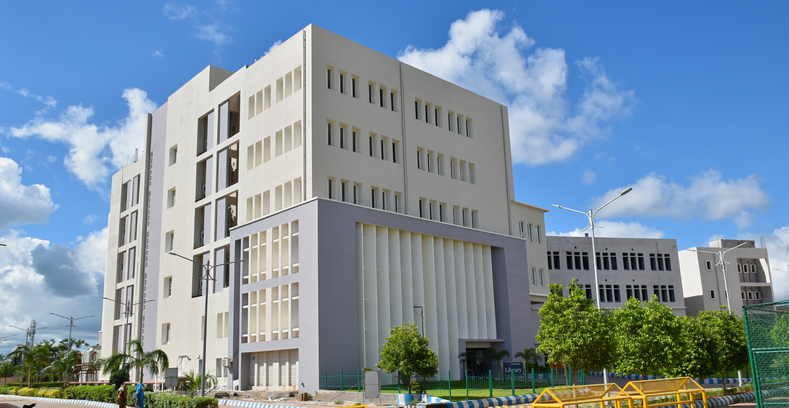
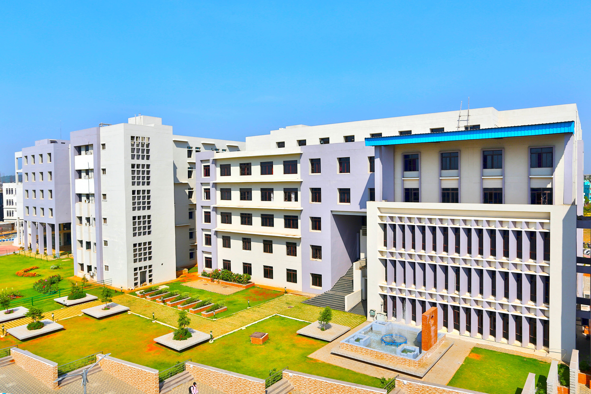

Faculty of Engineering and Technology (ITER), Siksha ‘O’ Anusandhan (Deemed to be) University
Bhubaneswar, Odisha
Faculty of Engineering and Technology (ITER), Siksha ‘O’ Anusandhan (Deemed to be) University
Bhubaneswar, Odisha
Siksha ‘O’ Anusandhan (SOA), Bhubaneswar, declared U/S 3 of the UGC Act, 1956, is a leading university in India offering professional programs in multiple disciplines. Below are its key highlights:
This makes SOA the only university in Odisha to achieve such accolades.
The 2025 International Conference on Intelligent and Cloud Computing (ICoICC) serves as a nexus for scientists, researchers, practitioners, and students across diverse domains in intelligent and cloud computing research. It aims to attract contributions in system and network design supporting current and future applications and services. With the transition of local data centers to the cloud driven by IoT proliferation and 5G cloudification, new challenges emerge in management, privacy, and security. This conference shall focus on the recent paradigm shift from the cloud to edge computing. Additionally, addressing complex problems beyond human capabilities necessitates intelligent algorithms in future applications and system designs.
Interested authors can submit full articles in MS Word, using a Microsoft CMT account. The template of the abstract is available on IEEE. Acceptance of the abstract will be notified through email. The author has to submit the full-length paper within 20% similarity report for the selected abstracts, in MS Word/Latex format only using the same Microsoft CMT account, which will be presented at the conference. All the papers must be original and should not have been submitted to other journals or conferences. The presented papers at the mentioned conference will go through a peer-review process, and the selected papers will be published by IEEE after a quality check. The publication details will be provided after confirmation from the publisher.
| Event | Date |
|---|---|
| Full Paper Submission Opens | Dec 15, 2024 |
| Full Paper Submission Deadline | Jan 15, 2025 |
| Notification of Acceptance | Mar 10, 2025 |
| Camera Ready Paper Submission | Mar 30, 2025 |
ICoICC-2025
ICoICC-2025
In prior editions, the International Conference on Intelligent and Cloud Computing employed the acronym ICICC. However, to sidestep potential confusion with other conferences sharing a similar acronym, we've opted for ICoICC starting from the 3rd edition.
Name: Dr. Bharat Jyoti Ranjan Sahu
Affiliation: Siksha ‘O’ Anusandhan (Deemed to be) University, Odisha, India
Designation: Chief Coordinator (Center of Cybersecurity)
Address: Faculty of Engineering and Technology (ITER), Siksha ‘O’ Anusandhan (Deemed to be) University, Jagamohan Nagar, Jagamara, Khandagiri, Bhubaneswar, Odisha, Pin-751030.
Mobile: +91-7656095055
Email: bharatjyotisahu@soa.ac.in
© For Queries, Contact the Developer